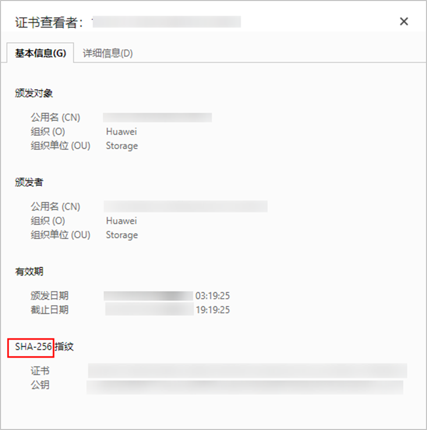

注册华为云Stack受保护环境时，可以导入Cinder证书和存储资源的CA证书，提升设备之间访问的安全性，否则系统将无法验证其所访问设备的信息，安全性存在风险。该操作为可选操作。
您可以向管理员获取，或者自行下载。
自行下载Cinder证书
- 使用Chrome浏览器，在地址栏输入https://FusionSphere OpenStack反向代理IP地址，按回车。
FusionSphere OpenStack访问IP地址获取方式：在Huawei Cloud Stack部署工具导出的参数汇总文件《xxx_export_all_CN》的“工具生成的IP参数”页签，搜索“Reverse-Proxy”，获取对应的参数值。

- 华为云Stack 6.5.1版本，请搜索“Cascading-Reverse-Proxy”。
- 如果华为云Stack有多个Region，请获取首Region的参数汇总文件。
- 单击URL输入栏左侧的“不安全”，单击“证书无效”。
不同浏览器提示方式不同，此处以Google Chrome 120为例进行说明。

- 在弹出的对话框中，选择“基本信息”页签，查看证书安全算法等级。
由于只有SHA-256及以上安全等级的算法才能通过本产品的校验，因此如果证书安全等级不满足要求，则无需执行后续操作。如果满足要求，则继续执行4。

- 选择“详细信息”页签，单击“导出”。
- 根据向导提示，导出证书并重命名证书文件为XXX.pem。
XXX为实际的证书名，证书格式必须为.pem格式。
自行下载存储资源CA证书
如果生产存储为OceanStor Dorado 6.1.5及后续版本或OceanStor 6.1.5及后续版本，以下获取CA证书的方式均不适用，请参考《OceanStor Dorado产品文档》或《OceanStor产品文档》中的“通过存储内置CA中心签发证书”章节获取CA证书。
- 方式一：
- 登录PKI CA证书下载界面。
- 单击“二级CA证书”。
- 在搜索框中输入“Huawei IT Product CA”，单击“查询”。
- 在查询结果区域中，单击“Huawei IT Product CA”证书所在行的
 ，下载证书并保存在本地。
，下载证书并保存在本地。
证书文件格式必须为.pem格式，如果保存的证书文件格式不符合要求，请手动修改证书文件后缀为.pem。
- 方式二：